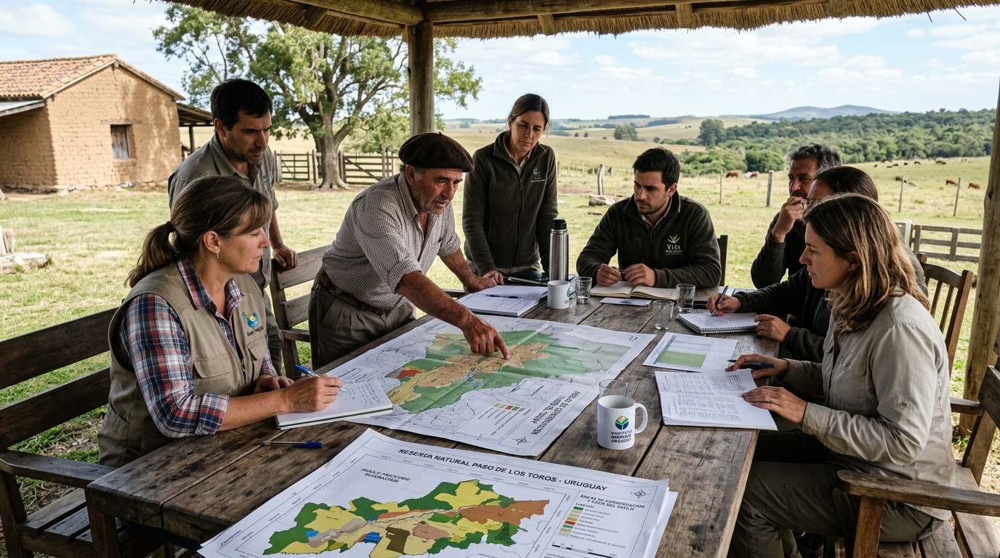

Conservación
10 de Agosto, 2026
ANCU coopera en muestreo sanitario de jabalíes junto a la Facultad de Veterinaria
Jornada de investigación en territorio para análisis serológico y control epidemiológico de especies exóticas en la cuenca del Río Negro.
Leer artículo completo →